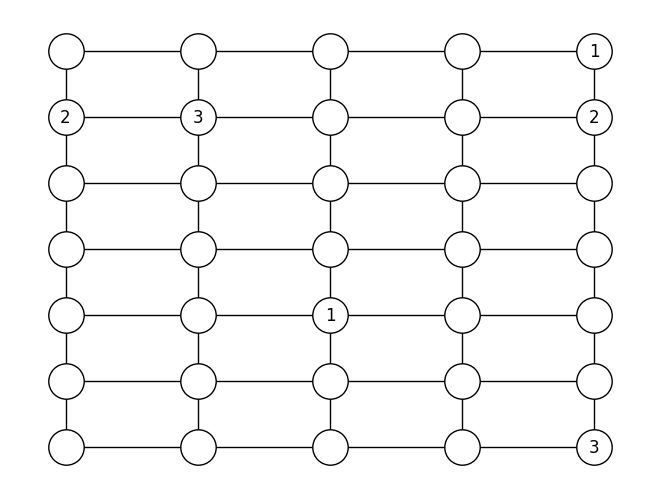

Numberlink
puzzle
grid
modeling
Problem description
This puzzle was published by Mickaël Launay (Launay 2024), but it is actually a well known problem called a Numberlink puzzle. We need to connect endpoints by paths over a board with cells such that:
- Each cell is part of a path
- Paths do not cross
The initial grid is illustrated below (the endpoints have different symbols but the same color):

We will represent this data as the following 2d grid graph:
MIP model
Erwin Kalvelagen posted a great article (Kalvelagen 2017) on this topic. I will use one of the models described in the post to solve the problem.
Parameters
- \(K\): set of values in the cells
- \(C\): set of cells
- \(F \subset C\): set of free cells
- \(E_k \subset C\): set of endpoint cells with value \(k\)
- \(N(p)\): set of adjacent (up, down, left, right) cells of cell \(p \in C\)
Variables
- \(\textcolor{blue}{x}_{p,k} \in \{0,1\}\): takes value \(1\) if and only if value \(k\in K\) is assigned to cell \(p\in C\)
Objective function
As this is a feasibility problem, any dummy objective function is suitable:
\[ \min 0 \]
subject to:
Constraints
- All free cells must be assigned exactly one value:
\[ \sum_{k \in K} \textcolor{blue}{x}_{p,k}=1 \quad \forall p \in F \]
- All endpoints must be assigned their given value:
\[ \textcolor{blue}{x}_{p,k}=1 \quad \forall p \in E_k, \; \forall k \in K \]
- If cell \(p\) is not an endpoint and takes value \(k\), then two of its neighbors must also take value \(k\):
\[ -L_p(1-\textcolor{blue}{x}_{p,k})+2 \le \sum_{q\in N(p)} \textcolor{blue}{x}_{p,k} \le 2 +U_p(1-\textcolor{blue}{x}_{p,k}) \quad \forall p \in F \]
Since a cell has at most \(4\) neighbors, \(U_p\) is bounded by \(2\). \(L_p\) can be set to \(2\) for every cell.
- If cell \(p\) is an endpoint with value \(k\), then one of its neighbors must take value \(k\):
\[ \sum_{q\in N(p)} \textcolor{blue}{x}_{p,k} = 1 \quad \forall p \in E_k, \; \forall k \in K \]
Solution
Solving this problem takes less than a second with the default solver in PuLP (CBC) and yields:

References
Kalvelagen, Erwin. 2017. “Yet Another Math Programming Consultant, Numberlink Models.” 2017. https://yetanothermathprogrammingconsultant.blogspot.com/2017/09/numberlink-models.html.
Launay, Mickaël. 2024. “La Règle Saint-Exupérienne : L’énigme Maths Du Monde n°36.” 2024. https://www.lemonde.fr/sciences/article/2024/11/30/les-trois-chemins-l-enigme-maths-du-monde-n-36_6421925_1650684.html.